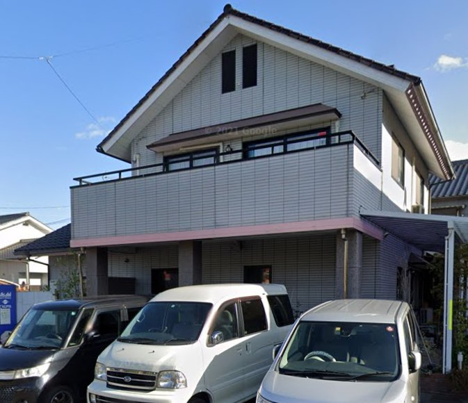

短期入所事業所みらくる

自立を目指し、安心して地域での暮らしをつなぐ場所
施設概要
対象年齢
小学1年生以上
定員4名
開所時間
16:00 ～ 翌10:00
送迎あり（ご相談ください）
コンセプト
少人数のアットホームで家庭的な雰囲気を大切にし、利用者様が安心して過ごせる空間づくりを心がけています。
家庭の延長として快適にリラックスして過ごしていただけるよう、きめ細やかなケアを提供いたします。
1日の流れの例
16:00
来所
16:15
荷物の整理等
16:30
自由時間
18:00
入浴
18:30
夕食
20:00
自由時間
21:30
就寝
翌7:00
起床・朝食
身支度・自由時間
～10:00
退所
持ち物について
基本的な持ち物は以下の通りですが、個人に合わせて柔軟に対応いたしますので、ご相談ください。
- 着替え（日中用・就寝用）
- お風呂セット（タオル、ボディタオル）
- 歯磨きセット（歯ブラシ、コップ、歯磨き粉）
- 食事セット（はし、スプーン、ふきん）
- その他必要な身の回り品[スマホ・ゲーム機等、一人の時間を楽しめるもの等]
※その他の持ち物については、事前にご相談ください。
アクセス
お問い合わせ
ご利用やお持ち物についてのご質問など、お気軽にお問い合わせください。
電話：070-7568-5005（16:00～10:00）
メール：ranon-mihara@outlook.co.jp